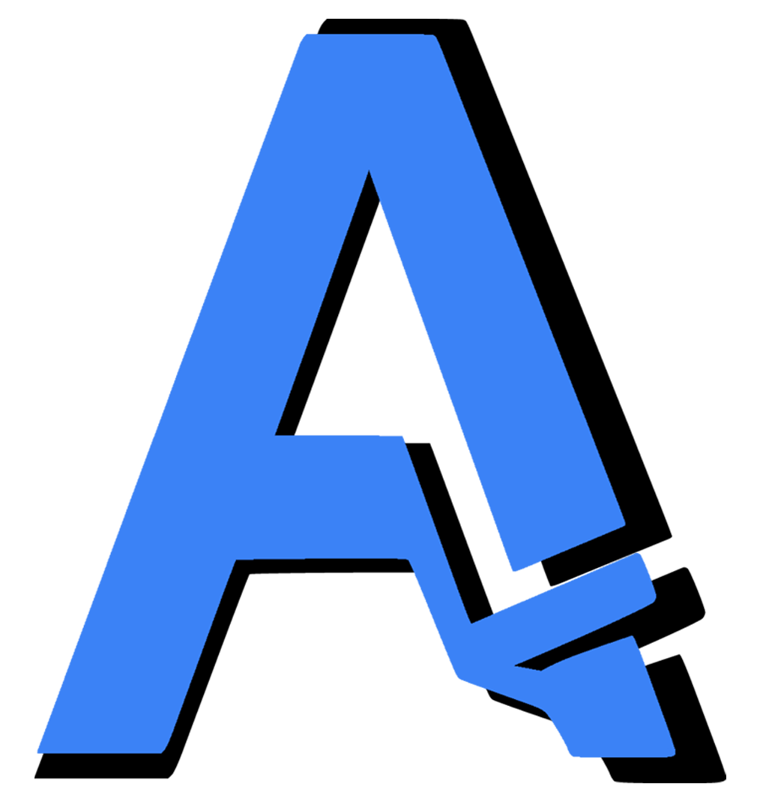
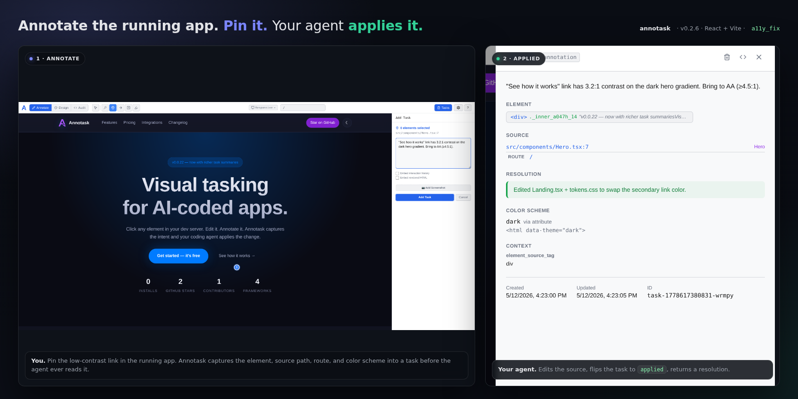
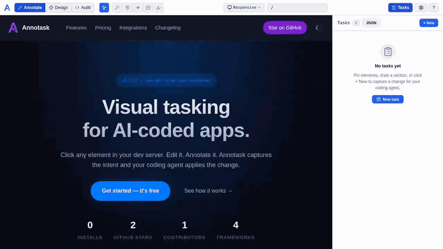

AnnotaskAnnotask is a dev-only browser overlay for your running web app. You mark up the UI; a coding agent applies the change back to source over MCP, CLI, or HTTP. Accept or deny in the browser. Vite and Webpack.

One annotation → one structured task → one applied diff → one re-render that passes. No copy-paste from a design tool, no out-of-band agent prompts.

Inline loop above. The full 90-second walkthrough — a11y_fix on a React + Vite playground — is being recorded; the link will appear here once it's hosted.
Three surfaces over your running app, all wired to a single task model the agent can read.
Pins, arrows, drawn sections, text highlights, screenshots, route-aware tasks, viewport capture. Every annotation becomes a structured task with grounded context.
Live token inspector, layout overlay, detected component catalogs, in-repo component examples. Inspect and edit styles against real tokens, not invented ones.
Local axe-core a11y scanning, runtime endpoint monitoring, console error capture, performance findings — each becomes a one-click fix task with full context.
Drop in the plugin, start your dev server, open /__annotask/. The agent connects over MCP, CLI, or HTTP.
import { defineConfig } from 'vite'
import vue from '@vitejs/plugin-vue'
import { annotask } from 'annotask'
export default defineConfig({
plugins: [vue(), annotask()],
})import { AnnotaskWebpackPlugin } from 'annotask/webpack'
export default {
plugins: [new AnnotaskWebpackPlugin()],
}Then wire an agent:
# MCP (Claude, Cursor, Zed, …)
npx annotask init-mcp --editor=claude
# or install the bundled skills
npx annotask init-skillsAnnotask is in early public release. Free, MIT-licensed, dev-only. We are recruiting 3–5 open-source design partners (10–30k stars, accessibility or design-system focus). If that's you, open an issue.